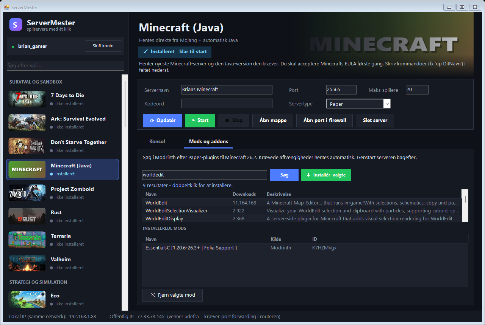
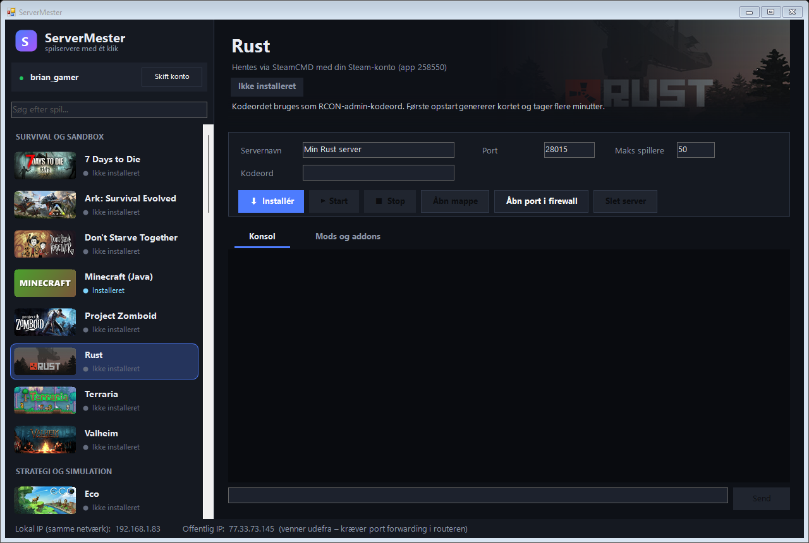

Din egen spilserver. Ét klik.
ServerMester henter, opsætter og starter servere til Minecraft, Valheim, Rust, Ark, CS2 og 35 andre spil – med mods. Ingen kommandolinje, ingen opsætningsguides, ingen månedlig regning.

Understøtter 40 af de mest populære spil til egen server
Fra ingenting til spilklar server på få minutter
Glem lange guides, konfigurationsfiler og kommandoer. ServerMester klarer det tunge arbejde.
Vælg dit spil
Find spillet i listen – med billeder og søgefelt. Log ind med din egen Steam-konto én gang.
Navngiv serveren
Skriv servernavn, kodeord og antal spillere. Porte og opsætning er allerede udfyldt for dig.
Tryk Installér og Start
ServerMester henter serveren, Java og det hele – og viser præcis hvilken adresse vennerne skal forbinde til.
Alt hvad du skal bruge – samlet ét sted
Automatisk installation
Henter serverfiler via Valves SteamCMD eller direkte fra udvikleren. Minecraft får automatisk den rigtige Java-version.
Mods med ét klik
Søg i Modrinth, Thunderstore og uMod direkte i programmet – eller indsæt et Steam Workshop-link. Afhængigheder hentes automatisk.
Live-konsol
Se hvad serveren laver og skriv kommandoer direkte – fx op dig selv som admin i Minecraft.
Firewall med ét klik
Åbner de rigtige porte i Windows Firewall og viser både din lokale og offentlige IP-adresse.
Din egen Steam-konto
Du logger ind i Valves eget vindue. ServerMester ser og gemmer aldrig dit kodeord.
Flere servere samtidig
Kør Minecraft til børnene og Valheim til vennerne på samme tid. Status ses direkte i spil-listen.
Gør serveren til jeres egen
Hvert spil har sin egen mod-verden. ServerMester kender dem alle sammen og installerer mods det rigtige sted – også mod-systemet selv, hvis det mangler.
- Modrinth · Minecraft
- Thunderstore · Valheim, V Rising, Core Keeper
- uMod · Rust
- Steam Workshop · Ark, Arma 3, DayZ, Garry's Mod m.fl.
- Fra fil · alle andre
- Paper (plugins) eller Fabric (mods) til Minecraft – du vælger
- BepInEx og Oxide installeres automatisk
- Fjern en mod igen med ét klik

Ingen kommandolinje. Ingen hovedpine.
Normalt kræver en spilserver lange guides, opsætningsfiler og kommandoer. ServerMester kender reglerne for hvert spil og gør det rigtige automatisk.
- Rigtige porte og opstartsindstillinger for hvert spil
- Opsætningsfiler skrives automatisk (fx server.cfg og server.properties)
- Fortæller tydeligt hvis et spil kræver en nøgle eller at du ejer det
- Spørger før den sletter noget – og stopper serverne pænt når du lukker

40 spil – klar til at hoste
Fra hyggelig Minecraft-verden til 100-spiller Squad-kampe.
★ = mods og addons understøttes direkte i programmet. Nogle spil kræver at din Steam-konto ejer spillet.
Spar tiden – og den månedlige regning
Leje eller gør-det-selv
- ✕Leje koster penge hver måned – for hvert spil
- ✕Gør-det-selv kræver guides og kommandoer
- ✕Mods skal installeres i hånden
- ✕Nyt spil = start forfra
ServerMester
- ✓Gratis – kører på din egen PC
- ✓Installér og start med ét klik
- ✓Mods søges og installeres i programmet
- ✓40 spil i ét og samme program
Godt at vide
Koster det noget?
Nej. ServerMester er gratis, og serveren kører på din egen computer, så der er ingen månedlig regning.
Skal jeg eje spillet?
For de fleste spil nej – deres servere er gratis at hente med enhver Steam-konto. Enkelte spil (fx DayZ, Factorio og Assetto Corsa) kræver at din konto ejer spillet. Programmet fortæller det tydeligt.
Er mit Steam-kodeord sikkert?
Ja. Du skriver kodeordet og evt. Steam Guard-koden direkte i Valves eget SteamCMD-vindue. ServerMester ser det aldrig og gemmer det ikke – kun dit brugernavn huskes.
Kan mine venner joine over internettet?
Ja. På samme netværk virker det med det samme. Venner udefra forbinder til din offentlige IP, som ServerMester viser – det kræver at porten også videresendes (port forwarding) i din router. Firewall-delen på PC'en klarer programmet for dig.
Hvad kræver det af min computer?
Windows 10 eller 11. Hvor kraftig PC'en skal være afhænger af spillet – en Minecraft- eller Valheim-server kører fint på en almindelig PC, mens fx Ark og CS2 fylder 20–35 GB og kræver mere.
Hvilke spil kan ikke køres?
Hell Let Loose og Deadside har ingen offentlige serverfiler (kan kun lejes hos godkendte udbydere), og Teardown har ingen dedikeret server. Alle andre spil på listen er understøttet.
Hvilket sprog er programmet på?
Programmet er på dansk. Knapperne er enkle (Installér, Start, Stop), så det er nemt at bruge uanset sprog.
Klar til at blive servermester?
Hent programmet, vælg et spil og inviter vennerne. Det tager kortere tid end at læse en serverguide.
Gratis · Windows 10/11 · Windows kan vise en advarsel første gang – vælg "Flere oplysninger" → "Kør alligevel".